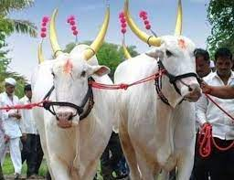
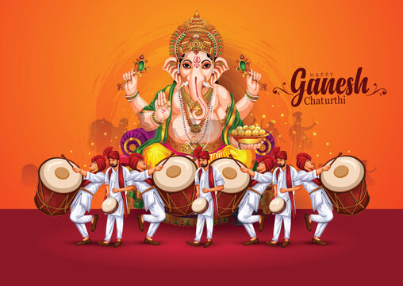
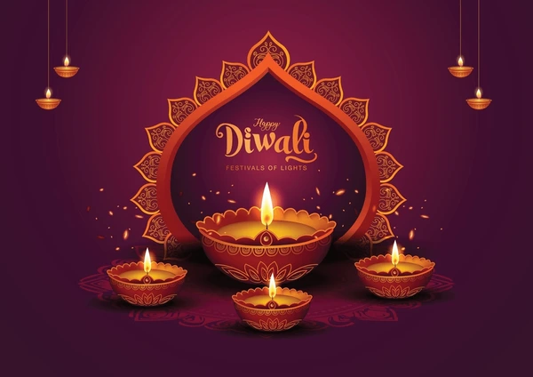
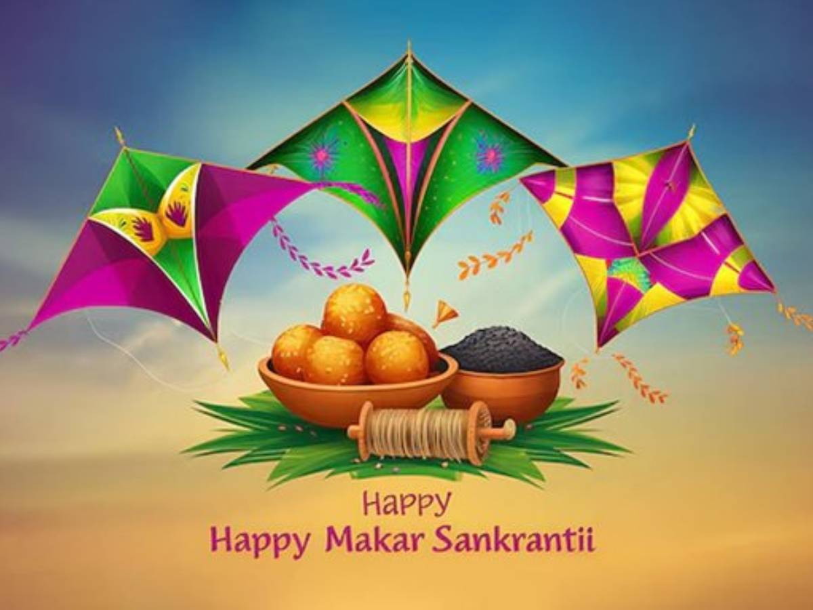
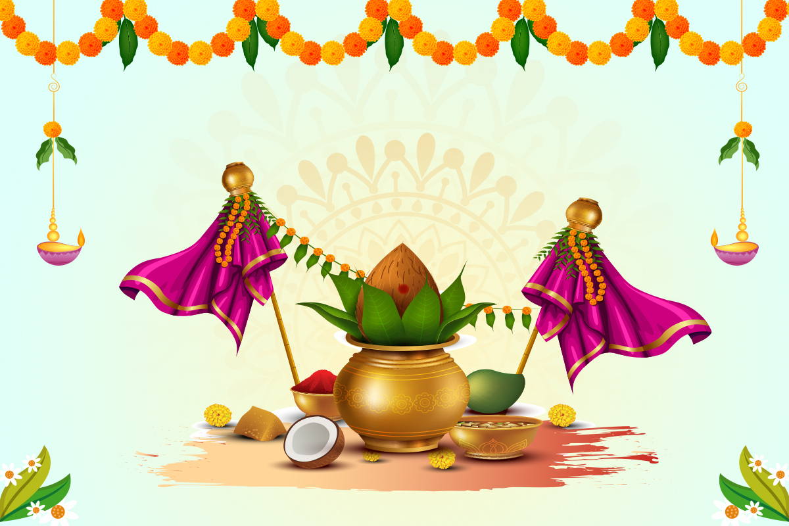

Bail Pola Bail Pola is a unique and significant festival celebrated mostly in the rural parts of Maharashtra, Madhya Pradesh, and Chhattisgarh. It is a festival dedicated to bulls, which are essential companions of farmers in agricultural work. The festival usually falls in the month of Shravan (August), a day before Raksha Bandhan.
On Bail Pola, farmers show gratitude and love towards their bulls for the hard work they do throughout the year. The day starts with bathing the bulls, applying oil, and decorating them with colorful clothes, flowers, bells, and ornaments. Their horns are often painted in bright colors, and they are taken out in a village procession. Farmers perform special pujas (rituals) to pray for the health and long life of the animals.
Children and women also take part in the celebration by preparing traditional food and sweets like puran poli and karanji. Cultural programs, songs, and dances are also held in some places, adding to the festive mood.

Ganpati Festival also known as Ganesh Chaturthi, is one of the most popular and widely celebrated festivals in India, especially in Maharashtra. It marks the birth of Lord Ganesha, the elephant-headed god of wisdom, prosperity, and good fortune. The festival usually falls in the month of August or September and lasts for 10 days.
The celebration begins with the installation of beautifully crafted idols of Lord Ganesha at homes and in public pandals (temporary stages). Devotees offer prayers, sweets like modaks, flowers, and perform aarti every day. The atmosphere during the festival is full of devotion, music, and joy. People chant “Ganpati Bappa Morya” with great enthusiasm.
Ganpati Festival is not just a religious event but also a time for social gatherings, cultural performances, and community bonding. Many schools, societies, and organizations organize various competitions and activities during this period.

Diwali, also known as Deepavali, is one of the most important and widely celebrated festivals in India. It is known as the "Festival of Lights" and symbolizes the victory of light over darkness and good over evil. Diwali usually falls in the month of October or November and is celebrated with great joy by people of all ages.
The festival has historical and religious significance. It is believed that on this day, Lord Rama returned to Ayodhya after defeating Ravana and completing 14 years of exile. People welcomed him by lighting diyas (oil lamps) and decorating their homes. Even today, people celebrate Diwali by lighting lamps, bursting firecrackers, and decorating their houses with rangoli and flowers.
During the festival, people clean and decorate their homes, wear new clothes, and prepare delicious sweets and snacks.

Makar Sankranti is a popular Hindu festival celebrated in various parts of India with great enthusiasm. It marks the transition of the sun into the zodiac sign of Makara (Capricorn), signaling the end of the winter solstice and the beginning of longer, warmer days. This festival usually falls on 14th January every year.
Makar Sankranti is a harvest festival and is celebrated in different ways across India. In Maharashtra, people exchange tilgul (sesame and jaggery sweets) and say “Tilgul ghya, god god bola,” which means “Take this sweet and speak sweetly.” It promotes the message of love and unity. In Gujarat and Rajasthan, people celebrate by flying colorful kites, and the sky becomes vibrant with thousands of kites throughout the day.
In states like Punjab, it is celebrated as Lohri, and in Tamil Nadu, it is known as Pongal.

Gudi Padwa a major festival celebrated in Maharashtra, marking the beginning of the Hindu New Year. It falls on the first day of the Chaitra month, usually in March or April, and is celebrated with great enthusiasm and joy. This day is also known as Ugadi in Karnataka and Andhra Pradesh, and Cheti Chand among Sindhi communities.
Gudi Padwa holds both cultural and religious significance. It is believed that on this day, Lord Brahma created the universe and began the cycle of time. It is also said to be the day when Lord Rama returned to Ayodhya after defeating Ravana.